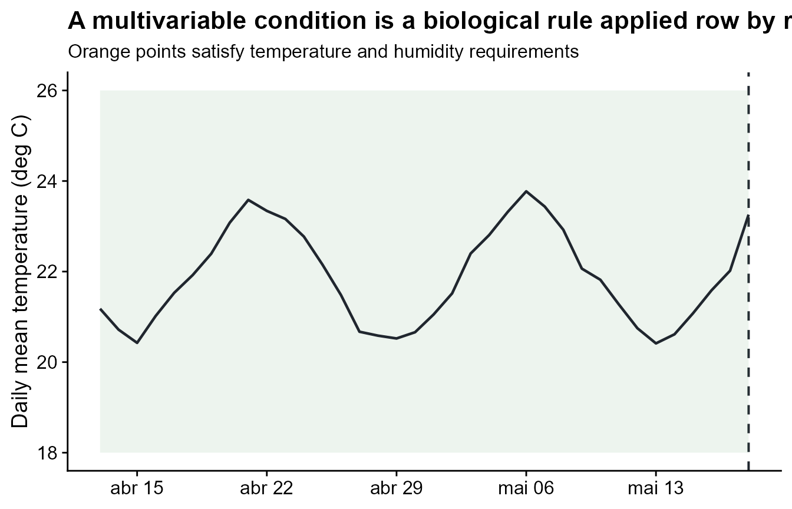
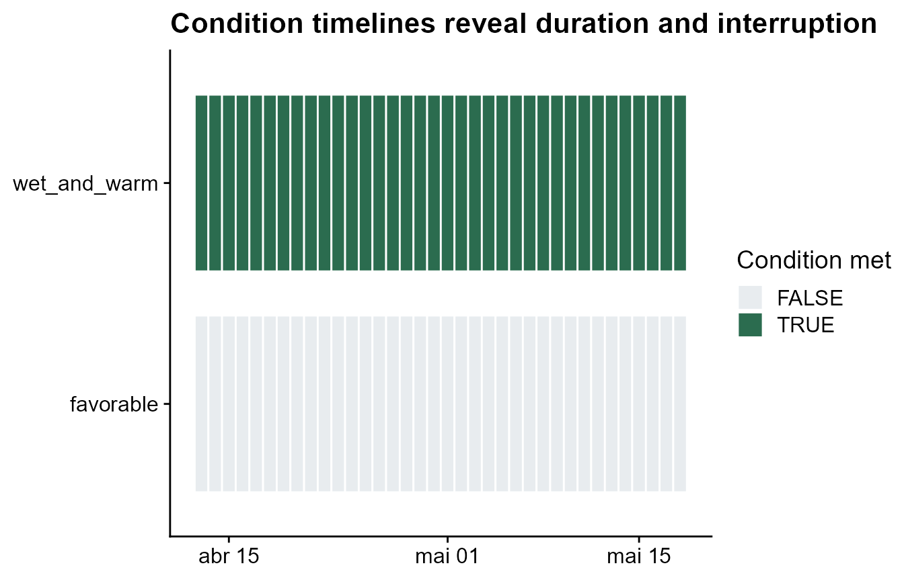
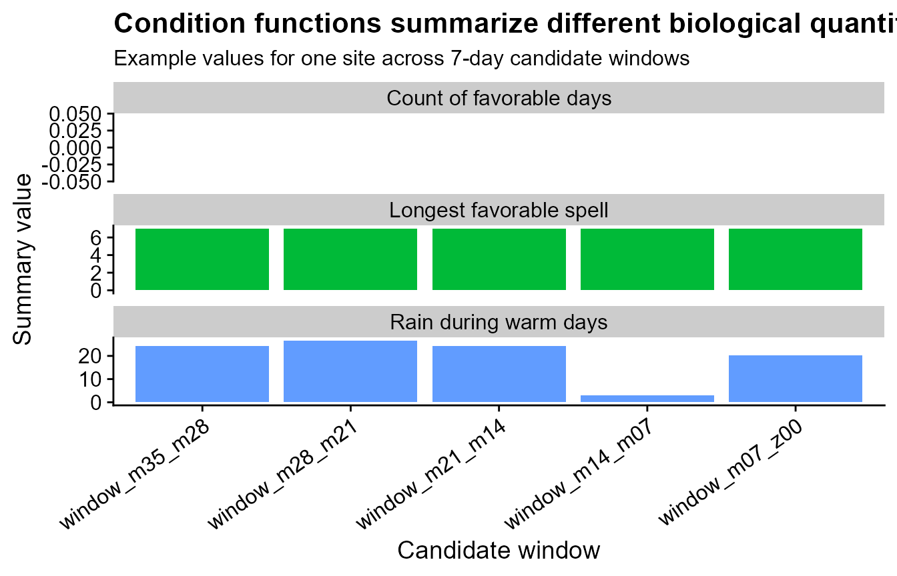

Summarizing multivariable disease-favorable conditions
Source:vignettes/multivariable-favorability.Rmd
multivariable-favorability.RmdMany plant disease processes depend on combinations of weather
variables. Temperature alone may not be enough, and humidity alone may
not be enough, but warm and humid periods together can represent
biologically favorable exposure. The .conditions entry in
statistics lets a user summarize those multivariable rules
inside each candidate window.
Function glossary
These functions are used inside the special .conditions
entry of statistics. Each condition function receives the
whole weather window, so the expression can combine temperature,
humidity, rain, wetness, or any other columns in the weather table.
| Function | What it does | Typical use |
|---|---|---|
count_when() |
Count rows where a multivariable condition is TRUE
|
Number of favorable observations |
proportion_when() |
Return the fraction of valid rows where the condition is
TRUE
|
Compare favorable exposure across windows |
sum_when() |
Sum one variable only when the condition is TRUE
|
Rainfall during warm periods |
mean_when() |
Average one variable only when the condition is
TRUE
|
Mean humidity during warm periods |
max_when() / min_when()
|
Return the maximum or minimum of one variable when the condition is
TRUE
|
Extremes during biologically favorable periods |
max_consecutive_when() |
Find the longest uninterrupted run where the condition is
TRUE
|
Longest favorable spell |
spell_count_when() |
Count separate uninterrupted runs where the condition is
TRUE
|
Number of favorable episodes |
mean_spell_duration_when() |
Average the length of favorable spells | Typical spell duration |
max_spell_duration_when() |
Return the length of the longest favorable spell | Maximum continuous exposure |
Load weather and disease data
The condition expressions refer to the actual column names in the
weather table. In this demo, the daily columns are named
daily_mean_temp, daily_mean_rh,
daily_sum_rain, and
daily_sum_leaf_wetness.
data(window_pane_demo_data)
weather <- window_pane_demo_data$weather
assessments <- window_pane_demo_data$assessments
knitr::kable(head(weather))| site_id | date | time | daily_mean_temp | daily_mean_rh | daily_sum_rain | daily_sum_leaf_wetness |
|---|---|---|---|---|---|---|
| S01 | 2023-12-01 | 2023-12-01 | 22.33292 | 80.61750 | 7.15 | 6 |
| S01 | 2023-12-02 | 2023-12-02 | 22.67500 | 78.64167 | 0.85 | 4 |
| S01 | 2023-12-03 | 2023-12-03 | 23.35333 | 79.42042 | 3.61 | 7 |
| S01 | 2023-12-04 | 2023-12-04 | 23.39167 | 77.86875 | 0.00 | 3 |
| S01 | 2023-12-05 | 2023-12-05 | 23.13667 | 78.99000 | 6.59 | 6 |
| S01 | 2023-12-06 | 2023-12-06 | 22.63375 | 80.20750 | 0.86 | 6 |
Make one condition visible
Before using .conditions, it helps to draw the rule on
the time series. Here a day is called favorable when temperature is
between 18 and 26 degrees C and relative humidity is at least 85%. The
orange points are the observations that satisfy the full rule. The
threshold is chosen to make the demo visible; a real analysis should use
thresholds justified by the pathosystem.
example_site <- assessments$site_id[1]
example_reference <- assessments %>%
filter(site_id == example_site) %>%
pull(assessment_time)
condition_weather <- weather %>%
filter(site_id == example_site) %>%
filter(time >= example_reference - 35 * 86400, time <= example_reference) %>%
mutate(
favorable = daily_mean_temp >= 18 &
daily_mean_temp <= 26 &
daily_mean_rh >= 85,
wet_and_warm = daily_sum_leaf_wetness > 0 &
daily_mean_temp >= 18 &
daily_mean_temp <= 26
)
ggplot(condition_weather, aes(time, daily_mean_temp)) +
geom_vline(
xintercept = example_reference,
linetype = "dashed",
color = "#20262e",
linewidth = 0.7
) +
geom_ribbon(aes(ymin = 18, ymax = 26), fill = "#6ea87d", alpha = 0.12) +
geom_line(color = "#20262e", linewidth = 0.8) +
geom_point(
data = condition_weather %>% filter(favorable),
color = "#c47f2c",
size = 2.6
) +
labs(
title = "A multivariable condition is a biological rule applied row by row",
subtitle = "Orange points satisfy temperature and humidity requirements",
x = NULL,
y = "Daily mean temperature (deg C)"
) +
theme_half_open()
The same rule can be shown as a calendar-like condition timeline. This is often the easiest plot for checking whether the condition creates isolated favorable days or longer spells.
condition_timeline <- condition_weather %>%
select(time, favorable, wet_and_warm) %>%
pivot_longer(
cols = c(favorable, wet_and_warm),
names_to = "condition",
values_to = "present"
)
ggplot(condition_timeline, aes(time, condition, fill = present)) +
geom_tile(color = "white", linewidth = 0.5, height = 0.8) +
scale_fill_manual(values = c("FALSE" = "#e8ecef", "TRUE" = "#2b6c4f")) +
labs(
title = "Condition timelines reveal duration and interruption",
x = NULL,
y = NULL,
fill = "Condition met"
) +
theme_half_open() +
theme(panel.grid = element_blank())
Define multivariable summaries
A condition summary receives the whole weather window as a data
frame. That is why expressions can combine several variables. Output
names from .conditions are not prefixed by one
weather-variable name because the condition already describes a
multivariable process.
summary_statistics <- list(
daily_mean_temp = list(
mean = "mean",
days_18_26 = count_between(18, 26)
),
daily_mean_rh = list(
mean = "mean",
humid_days = humid_hours(85)
),
daily_sum_rain = list(
total = "sum"
),
daily_sum_leaf_wetness = list(
wet_days = wet_days(0)
),
.conditions = list(
favorable_days = count_when(
daily_mean_temp >= 18 & daily_mean_temp <= 26 & daily_mean_rh >= 85
),
favorable_spell = max_consecutive_when(
daily_sum_leaf_wetness > 0 & daily_mean_temp >= 18 & daily_mean_temp <= 26
),
warm_rain_total = sum_when(
daily_sum_rain,
daily_mean_temp >= 18 & daily_mean_temp <= 28
)
)
)Apply the rules inside candidate windows
The window-pane workflow does not change. The only difference is that
statistics now includes .conditions.
windows <- make_windows(
min_offset = -35,
max_offset = 0,
width = 7,
slide_by = 7,
reference_col = "assessment_time"
)
features <- window_pane(
weather = weather,
assessments = assessments,
windows = windows,
reference_col = "assessment_time",
id_col = "site_id",
response_col = "disease_intensity",
unit = "days",
statistics = summary_statistics
)
features %>%
select(site_id, disease_intensity, contains("favorable"), contains("warm_rain")) %>%
slice_head(n = 6) %>%
knitr::kable()| site_id | disease_intensity | favorable_days_window_m35_m28 | favorable_spell_window_m35_m28 | favorable_days_window_m28_m21 | favorable_spell_window_m28_m21 | favorable_days_window_m21_m14 | favorable_spell_window_m21_m14 | favorable_days_window_m14_m07 | favorable_spell_window_m14_m07 | favorable_days_window_m07_z00 | favorable_spell_window_m07_z00 | warm_rain_total_window_m35_m28 | warm_rain_total_window_m28_m21 | warm_rain_total_window_m21_m14 | warm_rain_total_window_m14_m07 | warm_rain_total_window_m07_z00 |
|---|---|---|---|---|---|---|---|---|---|---|---|---|---|---|---|---|
| S01 | 75.2 | 0 | 7 | 0 | 7 | 0 | 7 | 0 | 7 | 0 | 7 | 24.15 | 26.60 | 24.41 | 2.97 | 20.31 |
| S02 | 59.2 | 0 | 7 | 0 | 7 | 0 | 7 | 0 | 7 | 0 | 7 | 5.51 | 24.52 | 22.33 | 24.98 | 45.46 |
| S03 | 53.9 | 0 | 7 | 0 | 7 | 0 | 7 | 0 | 7 | 0 | 7 | 17.59 | 21.36 | 34.21 | 19.35 | 17.91 |
| S04 | 71.7 | 0 | 7 | 0 | 7 | 0 | 7 | 0 | 7 | 0 | 7 | 23.45 | 16.45 | 9.04 | 8.94 | 20.53 |
| S05 | 80.9 | 0 | 7 | 0 | 7 | 0 | 7 | 0 | 7 | 0 | 7 | 9.45 | 26.14 | 12.47 | 12.88 | 9.37 |
| S06 | 87.2 | 0 | 7 | 0 | 7 | 0 | 7 | 0 | 7 | 0 | 7 | 29.88 | 21.78 | 17.80 | 14.52 | 18.87 |
Compare condition functions in the output
favorable_days counts how many rows inside a window
satisfy the full temperature-humidity rule. favorable_spell
measures the longest uninterrupted wet-and-warm period.
warm_rain_total sums rain only on rows where temperature is
inside the selected range.
This article stops at interpretation of the generated variables. It does not try to demonstrate a disease-response relationship, because that belongs in a later screening or modeling workflow.
condition_examples <- features |>
select(site_id, contains("favorable"), contains("warm_rain")) |>
slice_head(n = 6)
knitr::kable(condition_examples)| site_id | favorable_days_window_m35_m28 | favorable_spell_window_m35_m28 | favorable_days_window_m28_m21 | favorable_spell_window_m28_m21 | favorable_days_window_m21_m14 | favorable_spell_window_m21_m14 | favorable_days_window_m14_m07 | favorable_spell_window_m14_m07 | favorable_days_window_m07_z00 | favorable_spell_window_m07_z00 | warm_rain_total_window_m35_m28 | warm_rain_total_window_m28_m21 | warm_rain_total_window_m21_m14 | warm_rain_total_window_m14_m07 | warm_rain_total_window_m07_z00 |
|---|---|---|---|---|---|---|---|---|---|---|---|---|---|---|---|
| S01 | 0 | 7 | 0 | 7 | 0 | 7 | 0 | 7 | 0 | 7 | 24.15 | 26.60 | 24.41 | 2.97 | 20.31 |
| S02 | 0 | 7 | 0 | 7 | 0 | 7 | 0 | 7 | 0 | 7 | 5.51 | 24.52 | 22.33 | 24.98 | 45.46 |
| S03 | 0 | 7 | 0 | 7 | 0 | 7 | 0 | 7 | 0 | 7 | 17.59 | 21.36 | 34.21 | 19.35 | 17.91 |
| S04 | 0 | 7 | 0 | 7 | 0 | 7 | 0 | 7 | 0 | 7 | 23.45 | 16.45 | 9.04 | 8.94 | 20.53 |
| S05 | 0 | 7 | 0 | 7 | 0 | 7 | 0 | 7 | 0 | 7 | 9.45 | 26.14 | 12.47 | 12.88 | 9.37 |
| S06 | 0 | 7 | 0 | 7 | 0 | 7 | 0 | 7 | 0 | 7 | 29.88 | 21.78 | 17.80 | 14.52 | 18.87 |
The plot below uses one site to show how the condition summaries differ across candidate windows. The bars are not a model result; they are a check that each condition function produced the intended biological quantity.
condition_features <- features |>
filter(site_id == example_site) |>
select(contains("favorable_days"), contains("favorable_spell"), contains("warm_rain_total")) |>
pivot_longer(
cols = everything(),
names_to = "feature",
values_to = "value"
) |>
mutate(
window = sub(".*_window_", "window_", feature),
summary_class = case_when(
grepl("favorable_days", feature) ~ "Count of favorable days",
grepl("favorable_spell", feature) ~ "Longest favorable spell",
grepl("warm_rain_total", feature) ~ "Rain during warm days",
TRUE ~ "Condition summary"
),
window = factor(window, levels = unique(window))
)
ggplot(condition_features, aes(window, value, fill = summary_class)) +
geom_col(show.legend = FALSE) +
facet_wrap(~ summary_class, scales = "free_y", ncol = 1) +
labs(
title = "Condition functions summarize different biological quantities",
subtitle = "Example values for one site across 7-day candidate windows",
x = "Candidate window",
y = "Summary value"
) +
theme_half_open() +
theme(axis.text.x = element_text(angle = 35, hjust = 1))
Use .conditions when the biological rule depends on more
than one weather variable. Use variable-specific summaries when the
statistic only needs one column, such as mean temperature, total rain,
or humid observations.